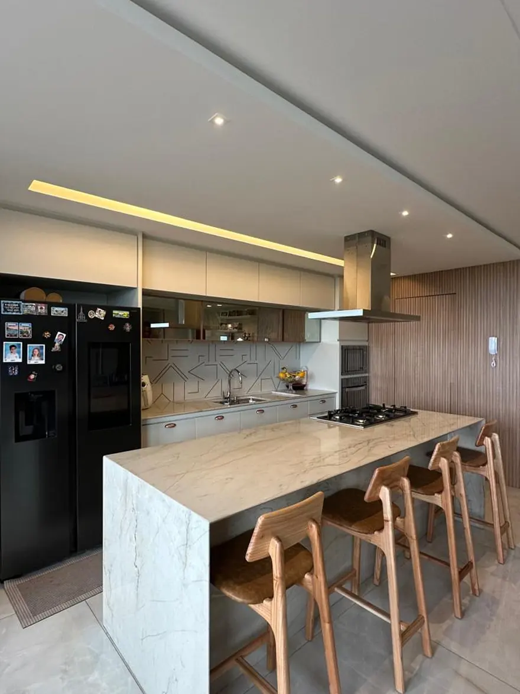
Rocha naturalQuartzito
Dureza próxima à do granito com o desenho de um mármore. É o material que mais sai em cozinha de alto padrão porque aguenta a rotina sem manchar como o mármore mancha.
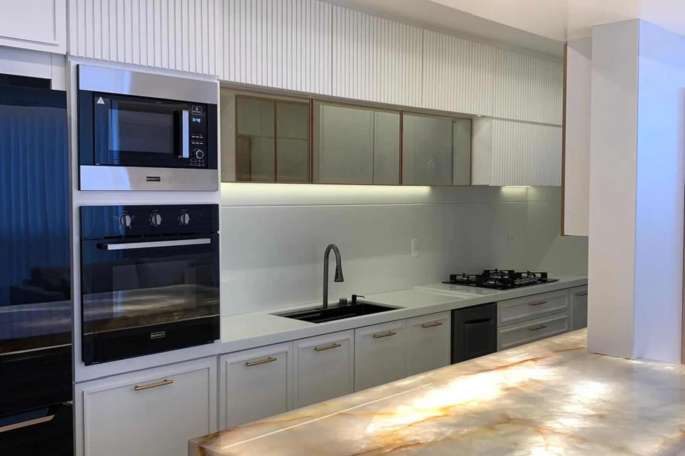
Vila Velha, Espírito Santo
A BM Rochas é a marmoraria que arquitetos do Espírito Santo indicam. Quartzitos, mármores e superfícies ultracompactas escolhidos, produzidos e instalados com acompanhamento do início ao fim da sua obra.
A BM Rochas
Cada detalhe de um projeto é grandioso para quem sonhou a vida inteira com aquela casa.
A BM Rochas nasceu para ser diferente das demais marmorarias. Aqui o atendimento é humanizado, o ambiente é familiar e existe disposição real de sonhar junto com quem está construindo. Cada parafuso, cada bloco, cada acabamento carrega essa forma de trabalhar.
São quase cinco anos de BM Rochas, apoiados em dezessete anos de estrada do proprietário no setor de rochas ornamentais. Você não fecha apenas um negócio: você ganha alguém responsável pela sua obra até a última peça instalada.
Breno Mozzer, proprietário
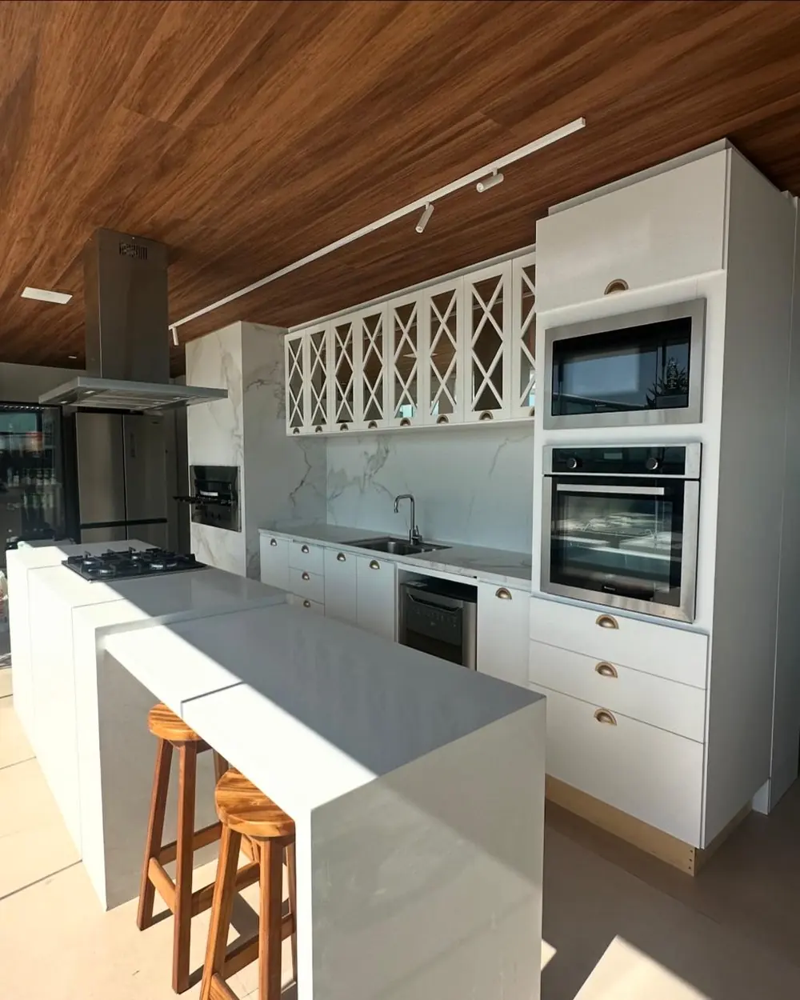
Comece por aqui
A hora certa de escolher a pedra muda tudo: o custo, o prazo e a quantidade de retrabalho. Escolha a sua situação e veja o que fazer agora.
Essa é a melhor hora para falar com a marmoraria, e quase ninguém fala. Definir o material antes de fechar marcenaria, elétrica e hidráulica evita o retrabalho mais caro da obra: bancada que não comporta a cuba escolhida, tomada no meio do backsplash, nicho que não fecha com a paginação da chapa.
Traga a planta ou o projeto do seu arquiteto. Indicamos os materiais que combinam com o uso de cada ambiente e já deixamos o orçamento amarrado.
Falar sobre o meu projetoPara medir, a obra precisa estar com alvenaria pronta, piso definido e os móveis planejados instalados ou com o projeto executivo em mãos. A medição é feita no local pelo próprio proprietário, e é nela que o prazo de entrega é confirmado.
Durante a produção e a instalação, falamos direto com o engenheiro ou o mestre da sua obra. O problema técnico fica com a gente, não com você.
Agendar a mediçãoReforma de cozinha e banheiro tem uma regra: quanto melhor a medição, menos quebradeira. Avaliamos o que dá para aproveitar, o que precisa sair e como fazer a troca com o menor transtorno possível dentro de uma casa habitada.
Trabalhamos muito com troca de bancadas, cubas esculpidas, revestimento de parede e escadas.
Falar sobre a reformaDetalhamento respeitado, paginação conversada antes do corte e prazo cumprido. É assim que trabalhamos com os escritórios que confiam projetos à BM Rochas hoje.
Ver como funciona a parceriaMateriais
Trabalhamos com rochas naturais e superfícies fabricadas, nacionais e importadas. A escolha não é só estética: é sobre o uso que aquele espaço vai ter.

Rocha naturalDureza próxima à do granito com o desenho de um mármore. É o material que mais sai em cozinha de alto padrão porque aguenta a rotina sem manchar como o mármore mancha.
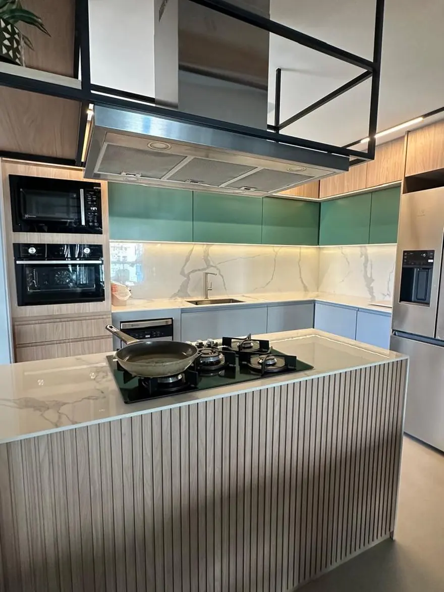
Lâmina ultracompactaAltíssima resistência a mancha, calor e risco, com cor uniforme do começo ao fim da chapa. Para quem quer branco absoluto na cozinha e não quer viver com medo.
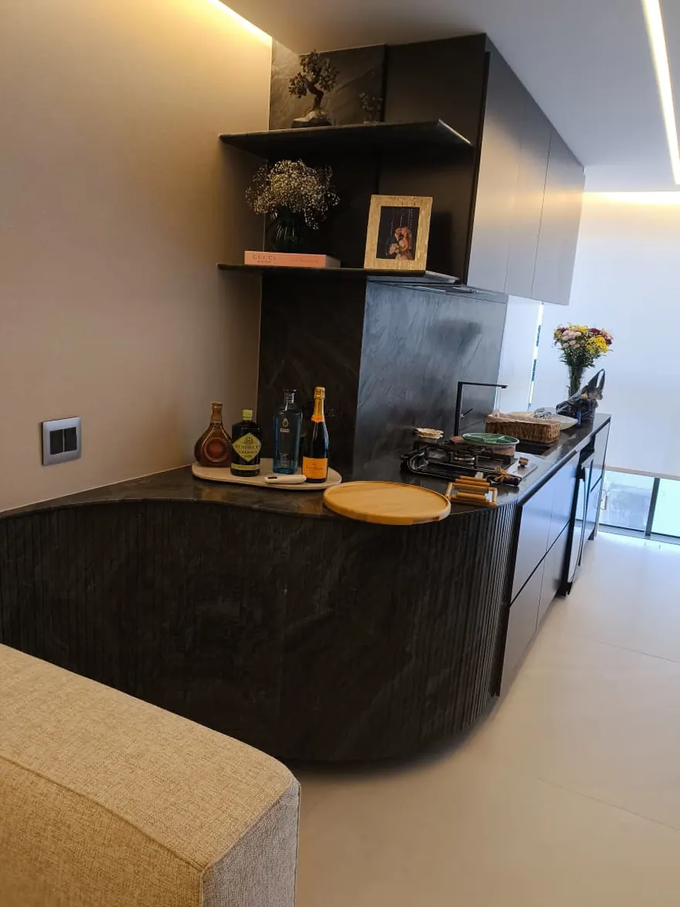
Rocha naturalQuando o projeto pede o desenho que só a natureza faz. Rende peças únicas em lavabos, mesas e revestimentos, e pede um pouco mais de cuidado em áreas molhadas de uso pesado.
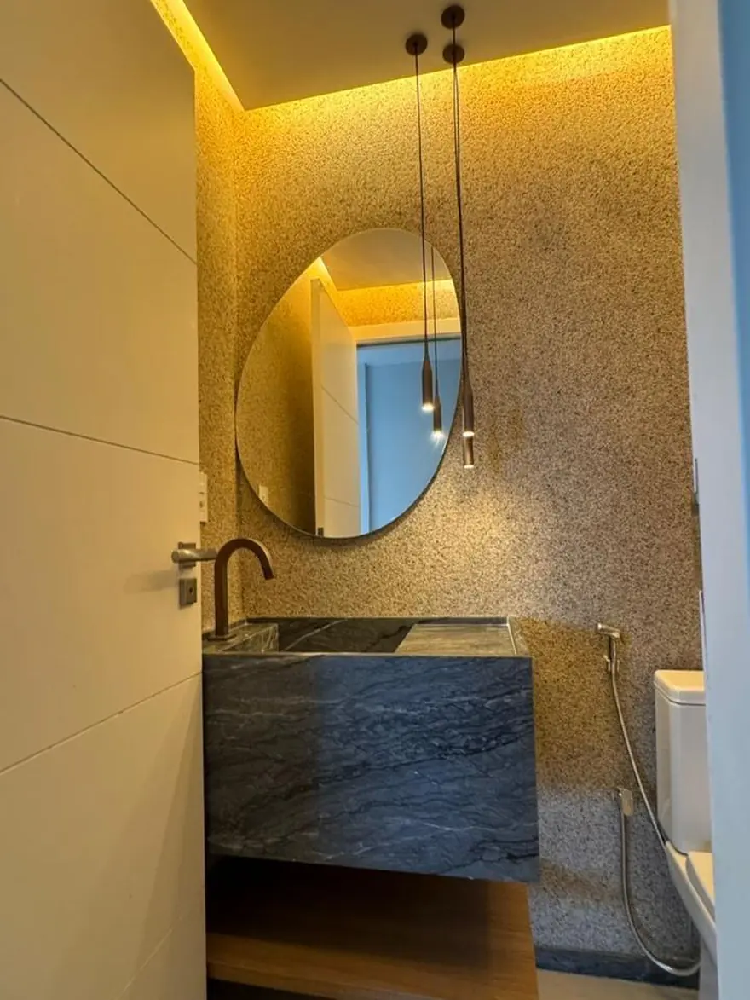
Rocha naturalO clássico bem executado. Resistente ao tempo e ao trabalho pesado, é a escolha certa para áreas externas, escadas, churrasqueiras e áreas de serviço.
Pergunta nº 1
no atendimento
Os quartzitos e os ultracompactos como Dekton e nanoglass são os materiais mais resistentes a mancha para cozinha. Eles seguram café, vinho, molho de tomate e limão muito melhor que o mármore, que é mais poroso e reage a ácidos. Todo material que sai da BM Rochas vai impermeabilizado, limpo e embalado, e você recebe as orientações de limpeza junto com a peça.
Projetos executados
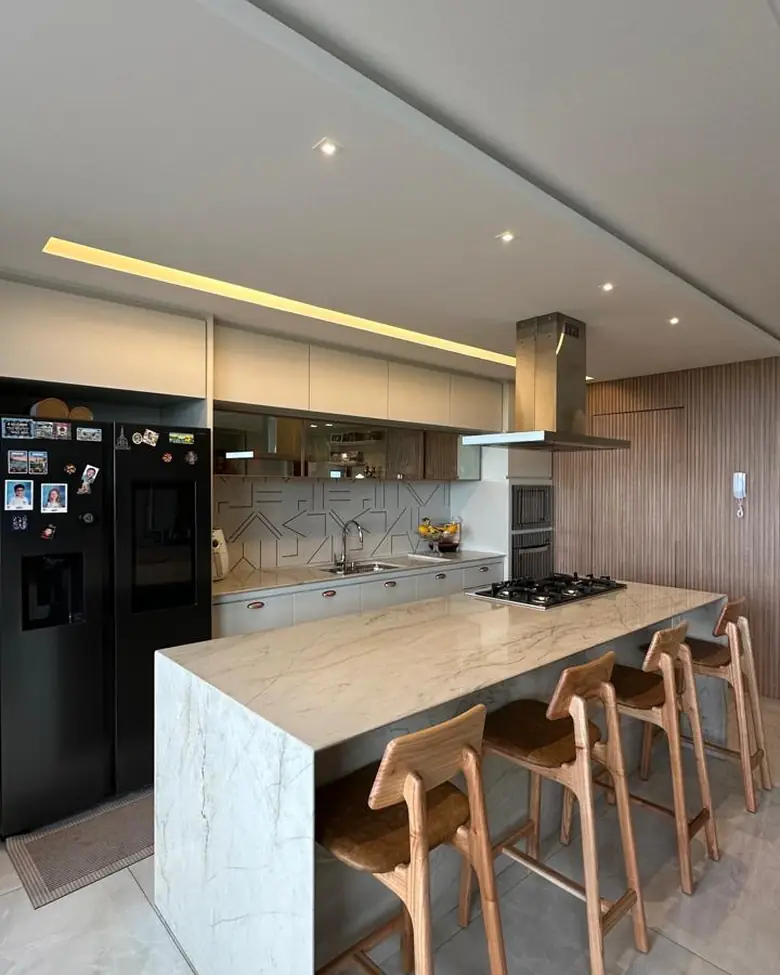
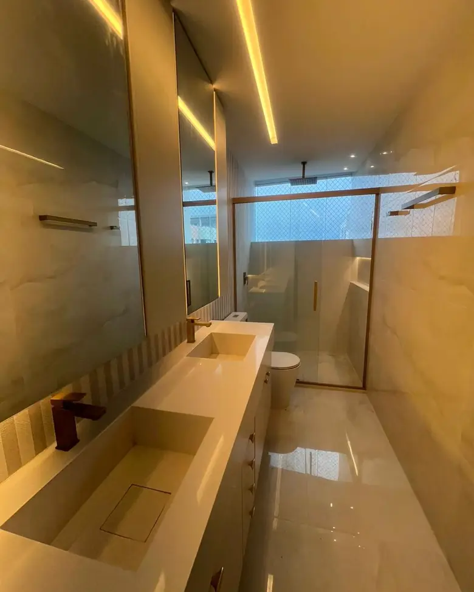
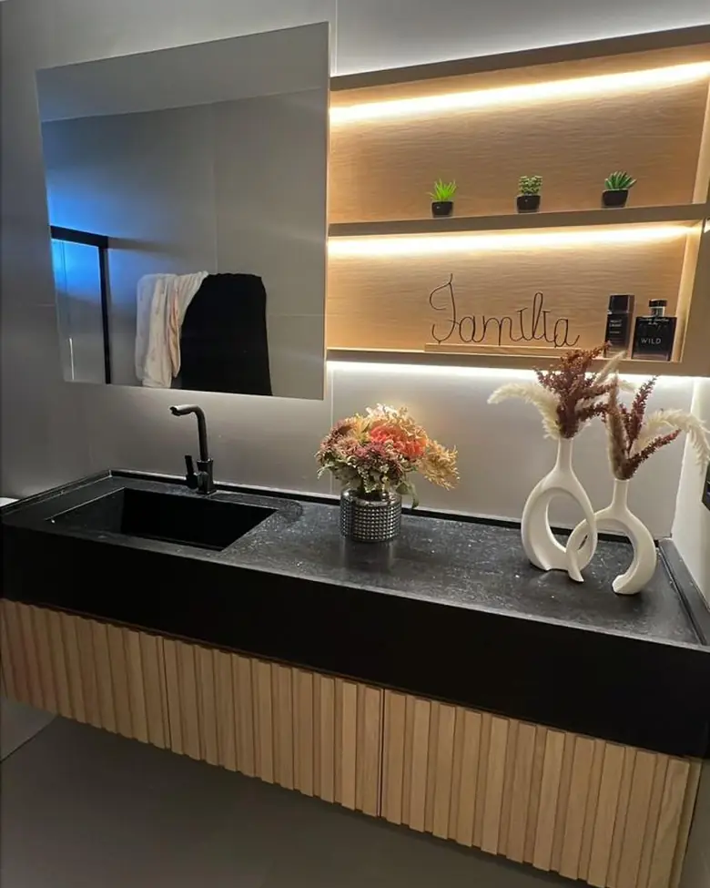
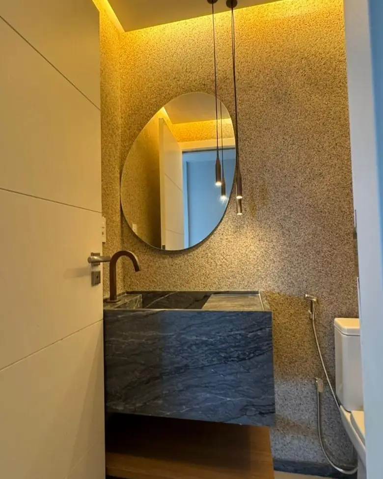
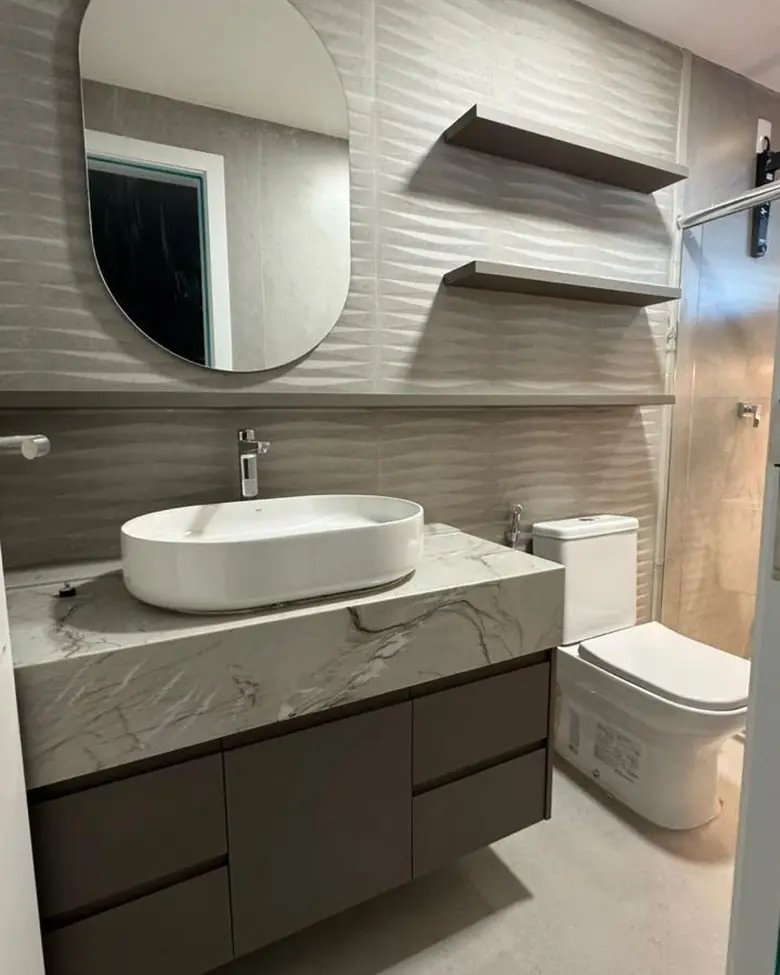
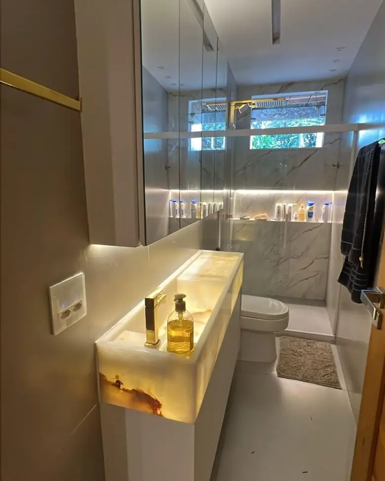
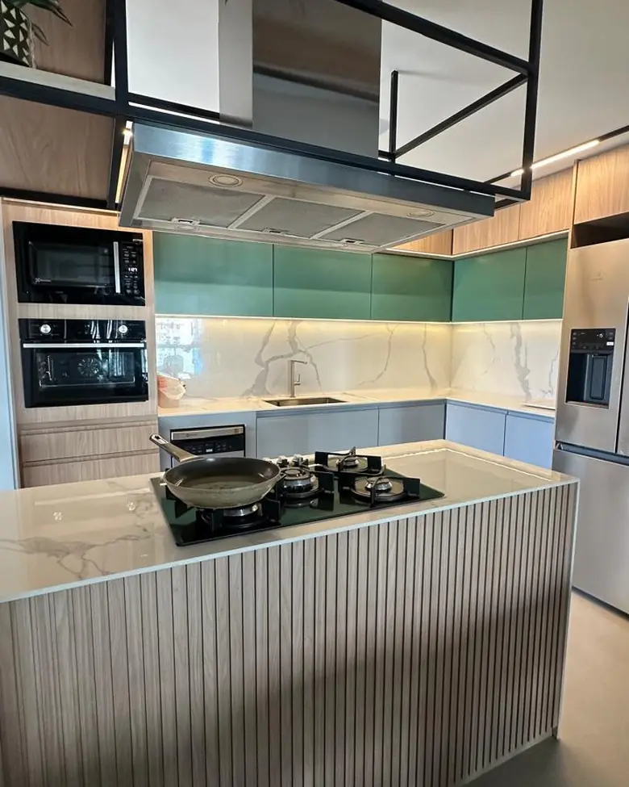
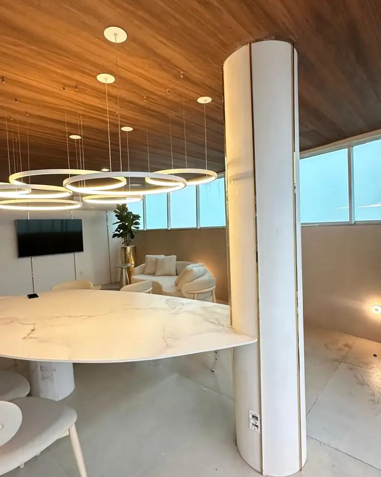
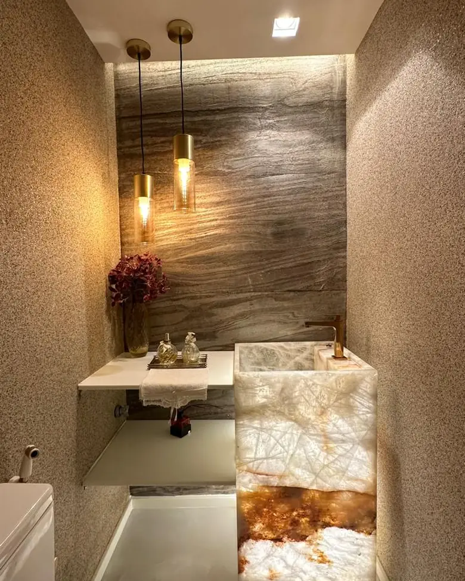
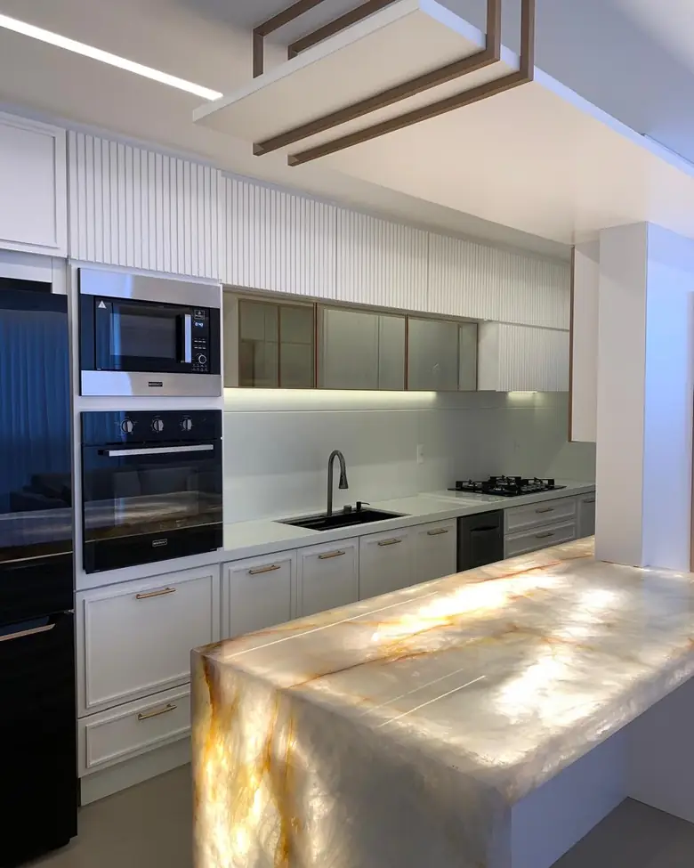
Como trabalhamos
Entendemos o projeto, a fase da obra e o uso real de cada ambiente antes de indicar qualquer material.
Avaliação pelo projeto ou por visita técnica, com valores claros e por escrito antes de qualquer compromisso.
Feita no local pelo proprietário, conferindo o que a obra realmente precisa e confirmando o prazo.
Corte e acabamento na medida, com o material entregue impermeabilizado, limpo e embalado.
Acompanhamento direto com o engenheiro da obra, sem transferir problema técnico para você.
Você não fecha um negócio. Você ganha alguém responsável pela sua obra do começo ao fim.
Por que a BM Rochas
A peça chega pronta para o uso e protegida, não empoeirada em cima de uma manta na obra.
Alinhamos prumo, nível, ponto de água e elétrica com quem está tocando a obra, antes da instalação.
Quem responde pelo resultado é quem vai até a sua obra. Sem telefone sem fio e sem terceirização.
A BM Rochas tem quase cinco anos. O repertório de rochas do proprietário tem dezessete.
Arquitetos e engenheiros
A BM Rochas trabalha lado a lado com escritórios de arquitetura do Espírito Santo. Paginação de chapa conversada antes do corte, prazo cumprido, obra entregue sem retrabalho e sem dor de cabeça para você levar ao seu cliente.
Venha conhecer o estoque e os materiais disponíveis, ou mande um projeto para orçarmos.
Falar sobre parceriaDúvidas frequentes
Depende do material, da espessura, do tipo de acabamento de borda e da quantidade de recortes do projeto. Por isso não damos um número solto por telefone: com o seu projeto ou com as medidas aproximadas, enviamos um orçamento fechado, por escrito, sem surpresa depois.
Sim. A medição é feita no local pelo próprio proprietário da BM Rochas, em Vila Velha e em toda a Grande Vitória, além de Guarapari e Domingos Martins.
Consegue. Com o projeto ou as medidas aproximadas em mãos, adiantamos o orçamento pelo WhatsApp. Se os valores fizerem sentido para você, agendamos a medição exata para a execução.
Quartzitos e superfícies ultracompactas como Dekton e nanoglass são os mais resistentes a mancha. Podemos mostrar fotos de projetos executados com esses materiais e explicar a diferença de cuidado entre eles.
O quartzito é uma rocha natural com dureza próxima à do granito e desenho parecido com o do mármore. O mármore é natural, mais macio e poroso, com veios únicos e mais sensível a ácidos. O ultracompacto é fabricado, tem cor uniforme e resistência muito alta a mancha, calor e risco.
O prazo é definido na medição, de acordo com o tamanho do projeto e o material escolhido, e fica confirmado por escrito antes de a produção começar.
A BM Rochas fica em Vila Velha e atende Vila Velha, Vitória, Serra, Cariacica, Guarapari e Domingos Martins.
Sim, e boa parte dos nossos projetos vem daí. Respeitamos o detalhamento, conversamos a paginação antes do corte e mantemos contato direto com o engenheiro da obra durante a instalação.
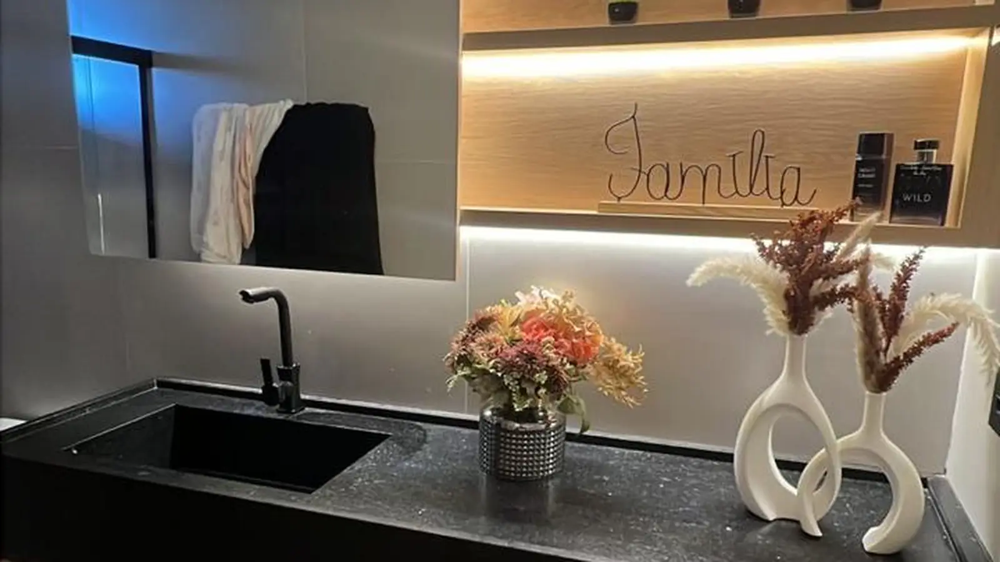
Contato
Conte em que fase você está e qual ambiente quer executar. Respondemos no WhatsApp, de segunda a sexta, das 8h às 18h.
Prefere ir direto ao ponto?
(27) 99910-0504
Preencha nome, WhatsApp e cidade para liberar o envio.